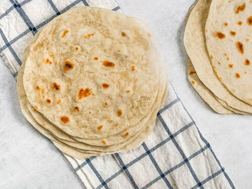

Flour tortilla

Description
I usually have to double this flour tortilla recipe because we go throught them so quickly. The homemade tortillas are so tender and chewy, you'll newver use store-bought again after learning how to make tortillas.
Ingredients
- 2 cups all-purpose flour
- 1/2 teaspoon salt
- 3/4 cup water
- 3 tablespoons olive oil
Steps
- In a large bowl, combine flour and salt. Add olive oil and mix it in until flour becomes crumbly.
- Stir in water. Turn onto a floured surface; knead 10-12 times, adding a little flour or water if needed to achieve a smooth dough. Let rest for 10 minutes.
- Divide dough in 8 portions. On a lightly floured surface, roll each portion into a 7-in. circle.
- Cook tortillas in a cast-iron or other heavy skillet over medium heat until lightly browned, about 1 minute on each side. Serve warm.